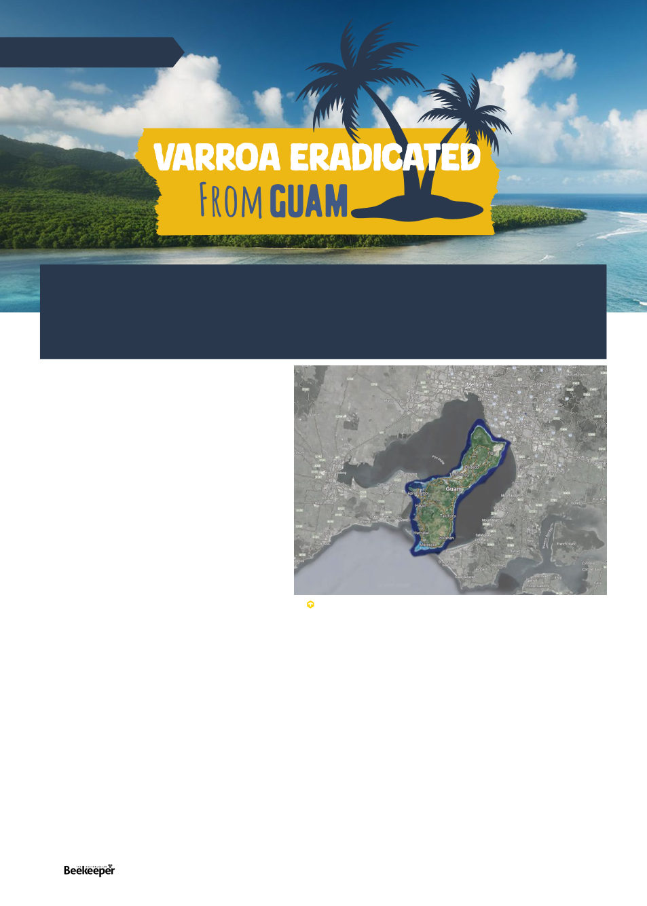

Eradicating an invasive parasite is always a
worthwhile activity so I thought I’d contact him to
find out what he had eradicated.
“Varroa mites” he wrote back.2 I about fell out of
my chair. I recovered myself, repeating surely, surely
it was just the less dangerous “Varroa jacobsonii”
though. So I asked him. “Varroa destructor,” he
said. For the next few days “have I told you about
Guam??” was all I could say to anyone.
Now before I tell you his story, let me tell you about
Guam. Guam is a small island in the west Pacific
about 2000 kilometres east of the Philippines and
1900 north of Papua New Guinea, which is to say
really far from the nearest “mainland” of any kind.
The island is 549 square kilometres, which would
nicely fit within Port Phillip Bay, and has a population
of 168,801, which convenient for comparison
is almost exactly the same as the population of
the Mornington peninsula on the east side of the
comparison map in Fig 1. The population of Guam
is relatively concentrated in the north, with the
population of the more rugged south mostly limited to
coastal villages. The south has, according to Rosario, mostly
lots of rivers, ponds, and waterfalls, and having googled it
myself, the waterfalls look very pretty. Also relevant to our
story here, Guam is not entirely alone in the Pacific, the
Commonwealth of the Northern Mariana Islands (CNMIs)
are another cluster of islands of which the main islands are
75-200 kilometres north of Guam.
Honey bees are, of course, not native to Pacific Islands.
Apis mellifera ligustica, the italian bee, was first introduced
to Guam in 1907 from Hawaii*, with some follow up
importations of more bees until in 1954 the Organic Act
of Guam was signed, which banned further importation
of honey bees to Guam. The Northern Mariana Islands
continued to import bees from Hawaii until 2010 … varroa
had arrived in Hawaii in 2007.5
ARTICLE BY
KRIS FRICKE
Which brings us to our story. Christopher Rosario, a native
of Guam, had graduated the University of Guam in 2012
with a Bachelor’s degree in biology and wanted to become
a veterinarian. In 2013 he found a job opening as a field
technician conducting the Project APHIS (USDA Animal and
Plant Health Inspection Service) National Honey Bee Survey
(NHBS†) to see if Varroa or Tropilaelaps mites were present in
Guam and the Northern Mariana Islands. He did not have a
background in beekeeping and was initially afraid of getting
stung to death, but he had a lot of debt from his bachelor’s
degree and veterinary school would only have added to it, so
he applied for and got the bee survey job.
The NHBS wanted him to survey 24 apiaries, but there was
a problem: there were only four established apiaries on the
island! He put word out in the local news requesting the
public to call in feral colonies, and soon three to four times
I made a shocking discovery the other day … which was that Christopher
Rosario made a shocking discovery a few years ago. I was browsing through a
recent issue of Entomology Today1, as one does, and there was an article that
mentioned Guam state entomologist Christopher Rosario had “eradicated an
invasive parasite,” but didn’t mention which one.
Fig 1 Guam fits snugs in Port Philip Bay, & has has almost
exactly same population as that of the Mornington Peninsula
on the east side of the bay. Map data © 2024 Google.
38 |
Celebrating 125 years | Vol. 126 | No. 02